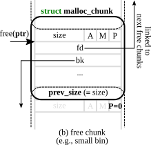
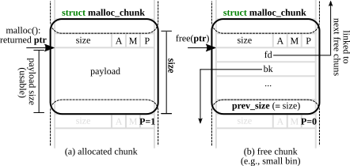
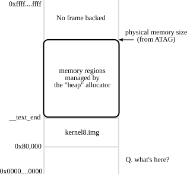

Maintaining free chunks for reuse
- Q. How to do
free()? - Q. How to do
alloc()? - Q. Where to store “link” then?

Taesoo Kim
Taesoo Kim
Is there any other file systems as easy as FAT series?
Since Box uses allocate in its implementation and is considered “safe” by Rust, would it be possible to introduce/create an infinite number of Boxes which will take up all of a system’s memory and cause a memory error?
// allocate a memory region (an object)
void *malloc(size_t size);
// free a memory region
void free(void *ptr);
// allocate a memory region for an array
void *calloc(size_t nmemb, size_t size);
// resize/reallocate a memory region
void *realloc(void *ptr, size_t size);
// new Type == malloc(sizeof(Type))
// new Type[size] == malloc(sizeof(Type)*size)struct malloc_chunk {
[...]
// double links for free chunks in small/large bins
// (only valid when this chunk is freed)
struct malloc_chunk* fd;
struct malloc_chunk* bk;
// double links for next larger/smaller size in largebins
// (only valid when this chunk is freed)
struct malloc_chunk* fd_nextsize;
struct malloc_chunk* bk_nextsize;
};



malloc()/free()?Ref. Allocator Designs
alloc()?free()?
free()?alloc()?
alloc()?free()? Bins
sz=16 [ -]--->[fd]--->[fd]-->NULL
sz=24 [ -]--->[fd]--->NULL
sz=32 [ -]--->NULL
...layout in an efficient manner?